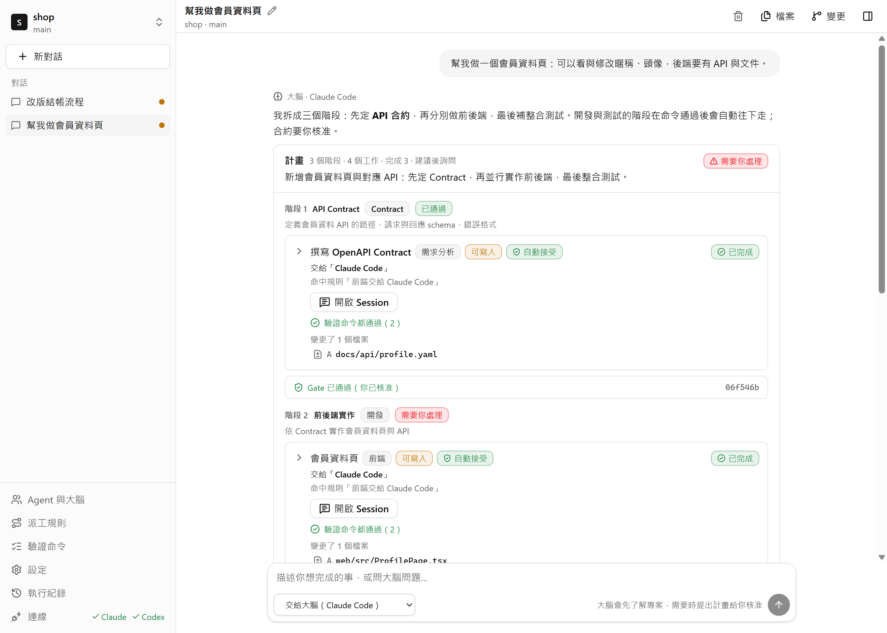
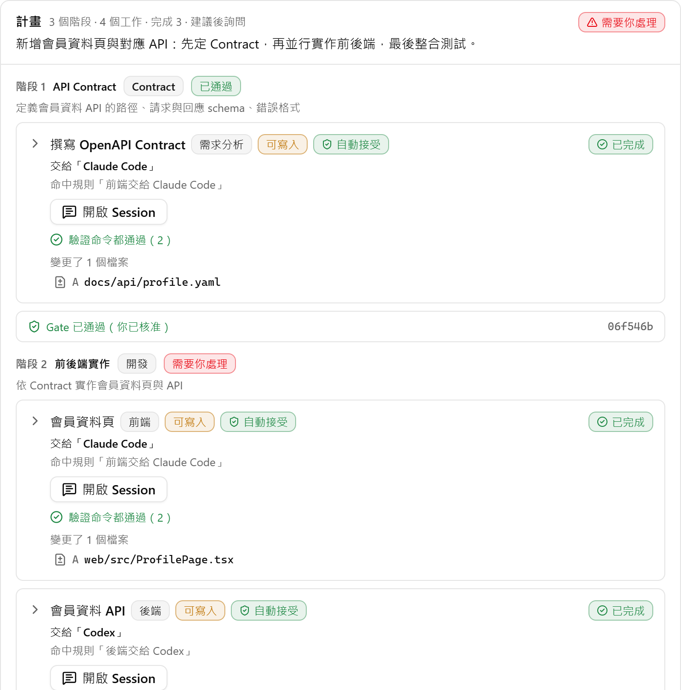
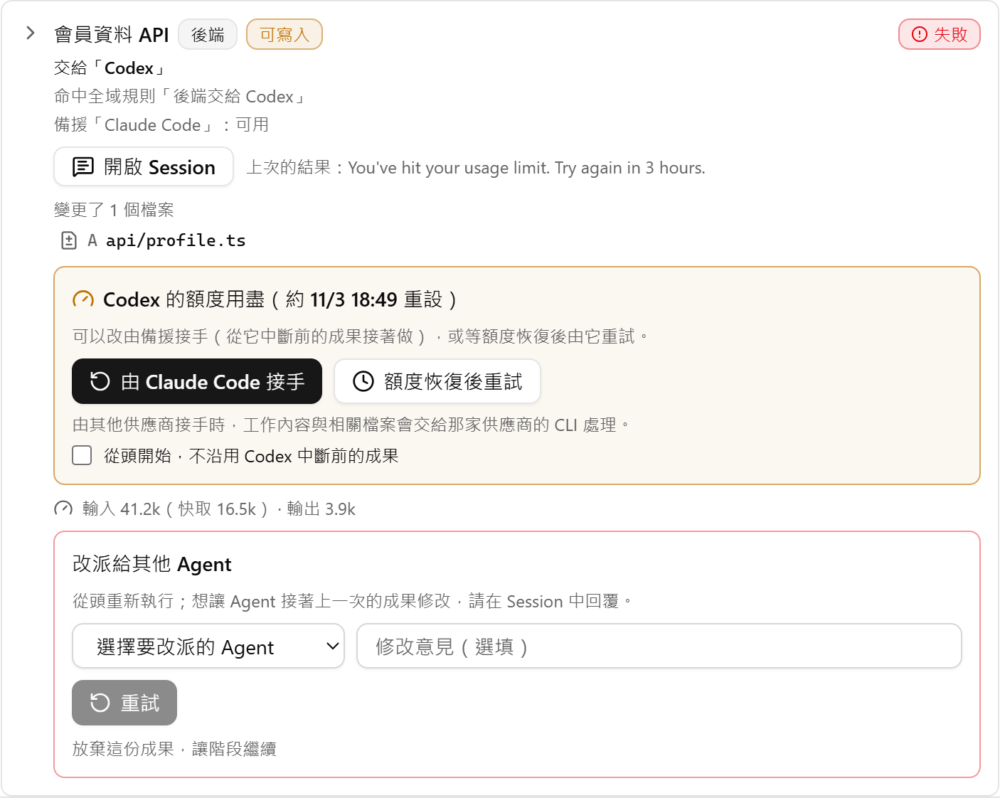
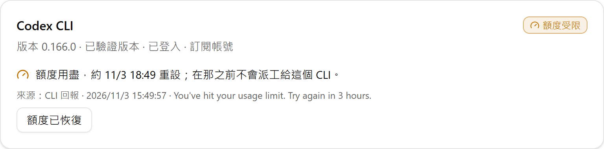

這些是 Pyloxa 的範例規則。規則由你自己寫，每個工作都會標出它命中的規則。
每份成果都經過檢查
執行中
已驗證
已整合
運作方式
先說你想做什麼。

再核准計畫。

最後合併通過的成果。
- Adocs/api/profile.yaml
- Aserver/src/routes/profile.ts
- Aweb/src/pages/Profile.tsx
- Atest/profile.test.ts
- Atest/contract.test.ts
額度用完的時候
如果 Codex 做到一半用完額度，Pyloxa 會停止派工給它、顯示額度何時重設，並依你的規則提出備援。你確認後，Claude Code 會從 Codex 已經改好的檔案接著做。


每個工作都跑我的測試。
npm run test 在每個工作自己的 worktree 執行。通過就自動接受；沒通過，Agent 會自動修正一次。
進下一個階段前先問我。
階段先在整合後的版本跑完命令，再等你按一下。不開的話，檢查通過的階段會自己往下走。
絕不碰我的憑證。
Pyloxa 只執行你已登入的 CLI，從不讀取、複製或傳送它們的 token，也不會 stash 或 reset 你的工作目錄。
用我的語言回覆。
介面與 Agent 的回覆語言可以分開選：繁體中文、简体中文或 English。
| 現在免費，Pro 之後推出 | 免費版$0 不需要帳號 | Pro價格尚未公布 |
|---|---|---|
| Agent | Claude Code 與 Codex CLI，使用你自己的訂閱 | 同左；訂閱額度用完時，經你允許可改用 API 計費 |
| 計畫與派工 | 大腦擬計畫、派工規則、驗證命令、階段 Gate | 同左，加上在你設定的範圍內自動執行 |
| 同時工作的 Agent | 一個 | 兩個 |
| 額度用盡時 | 每次接手由你確認 | 自動依序交給備援 |
| 工作區 | 檔案、Markdown、差異比對、git，以及透過 gh 開 pull request | 同左，加上多個 repo，並把審查留言轉成工作 |
| 下載 Windows 版 | 之後推出 |
免費版
$0
- Agent
- Claude Code 與 Codex CLI，使用你自己的訂閱
- 計畫與派工
- 大腦擬計畫、派工規則、驗證命令、階段 Gate
- 同時工作的 Agent
- 一個
- 額度用盡時
- 每次接手由你確認
Pro
價格尚未公布
- 另外提供
- 自動模式、同時兩個 Agent、自動備援、API 計費備援與多個 repo
- 常見問題
-
不會。Pyloxa 執行的是你已登入的官方 Claude Code 與 Codex CLI，用量算在你自己的訂閱裡。Pyloxa 不轉售、也不代理任何 AI 服務。
-
Windows 10 或 11（64 位元）、git，以及至少一個已登入的 Claude Code 或 Codex CLI。裝了第二個 CLI，派工規則與備援才派得上用場。
-
不會。Pyloxa 只用各 CLI 自己的指令查詢登入狀態，並像你一樣啟動 CLI；token 與憑證檔不會被讀取、複製或傳送。
-
Pyloxa 本身沒有伺服器，也不收集使用資料。你的程式碼只會送到 CLI 原本會送去的地方，適用 Anthropic 與 OpenAI 的條款。
-
Agent 在獨立的 git worktree 工作。Pyloxa 不會對你的工作目錄執行 stash、reset 或 checkout；要不要合併、要不要推送，都由你決定。
-
免費版安裝檔目前還沒有程式碼簽章，SmartScreen 可能顯示「Windows 已保護您的電腦」。請按「其他資訊」，再按「仍要執行」。安裝前可以先比對安裝檔的 SHA-256 與發布頁上的值。
-
自動模式、同時兩個 Agent、自動備援等功能。價格尚未公布；免費版會維持免費。
不會。Pyloxa 執行的是你已登入的官方 Claude Code 與 Codex CLI，用量算在你自己的訂閱裡。Pyloxa 不轉售、也不代理任何 AI 服務。
說一次就好。
安裝 Pyloxa、開啟專案資料夾，說出你想完成的事。大腦會先讀過專案，規模大一點的計畫會先問過你。
安裝檔目前尚未簽章；如果出現 SmartScreen，請按「其他資訊」，再按「仍要執行」。